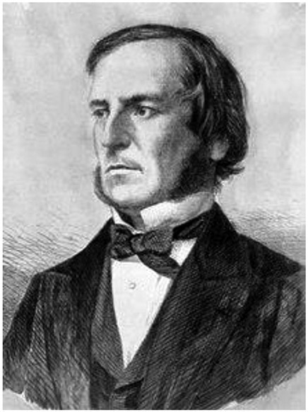
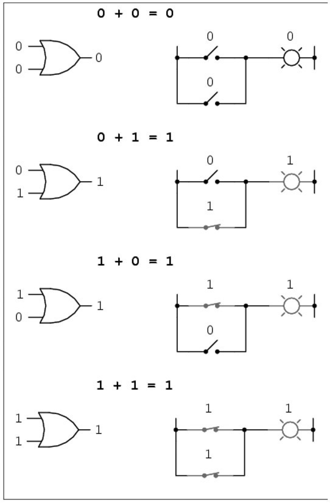
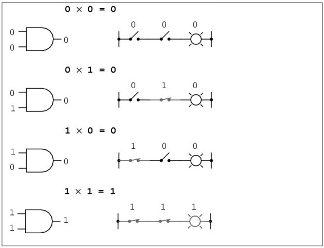

George Boole: English (1815–1864)
The English mathematician and logician George Boole developed a logical theory that serves today as a basis for electronic devices, and of course, the modern digital computer. In mathematical circles, Boolean algebra, which we will introduce later, has made his name popular to this day.
George Boole was born on November 2, 1815, in the town of Lincoln, Lincolnshire, England. Although his father was a shoemaker, he provided regular lessons for his son, which included making optical instruments. Besides a few years in elementary school, Boole was largely self-taught in mathematics. To help support the family, Boole had taught in local elementary schools at the age of sixteen, and at twenty he opened his own school. During his leisure time he read classical mathematical books by such famous mathematicians as Isaac Newton, Pierre-Simon Laplace, and Joseph-Louis Lagrange. He was taught Latin by some local folks, but he was self-taught with modern languages. He continued to be popular locally in matters of education and other social issues. However, throughout this time he continued to study mathematics and began to publish papers, especially in algebra, using symbolic methods.
In 1849, he was appointed professor of mathematics at Queens College, Cork, Ireland, where he met his wife, Mary Everest, who, in her own right, became a mathematician of note. This marriage produced five daughters. In 1854, Boole wrote a treatise on Aristotle’s system of logic entitled An Investigation of the Laws of Thought, on Which Are Founded the Mathematical Theories of Logic and Probabilities. This was the basis of what later became known as Boolean algebra, which was based on simply two quantities: true or false, or 1 or 0. No other symbols are used in Boolean algebra aside from 1 and 0.

Figure 35.1. George Boole.
Let’s take a quick look at some of the basics of Boolean algebra. First, there is the addition using only the two symbols available, 1 and 0:
0 + 0 = 0
0 + 1 = 1
1 + 0 = 1
1 + 1 = 1
This is analogous to the “or” function in logic, where the 1 can replace “true” and the 0 can replace “false.” That is, if either of the two elements being added is a 1, then the sum is 1.

Figure 35.2.
So if we have a longer addition, the same holds true. Such as: 1 +0 + 1 + 1 +1 + 0 = 1. This can also be seen with switching circuits, as shown in figure 35.2.
In Boolean algebra we also have multiplication, which follows the “and” rules for logical reasoning. That is, something is true when both are true. This can be shown as follows symbolically:
0 × 0 = 0
0 × 1 = 0
1 × 0 = 0
1 × 1 = 1
We see here that in order for us to get a 1 or a true statement, both must be true; that is, a true and a true yields a true. Once again, we can see that with switching circuits to get the light to go on, both switches must be closed (see fig. 35.3).
In Boolean algebra, if a statement, or a variable, is not 1, then it is 0, so we can say that 0 is a complement of 1. We could go on and develop the entire Boolean algebra, but the size of this book would not be large enough to accommodate the subject. We leave this to the ambitious reader to pursue further. However, this system allowed logical arguments to obtain more structure.

Figure 35.3.
George Boole continued to become more involved in social matters as well as university instruction. At the end of November 1864 on his way to the university from home, a mere distance of 3 miles, Boole got caught in a severe rainstorm and continued to lecture in his wet clothing. Shortly thereafter, he came down with pneumonia, which worsened, and on December 8, 1864, he died at Ballintemple, Cork, Ireland. Today, George Boole is largely remembered through his development of Boolean algebra and a crater on the moon named after him.